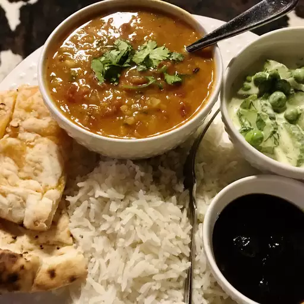

Daal Makhani

Description
It's a buttery, rich, black lentil dish that is slow cooked with a lot of time, and a lot of love!
Ingredients
- 1 cup lentils
- 4 bay leaves
- 6 whole cloves
- 5 cup water
Steps
- Place lentils and kidney beans in a large bowl; cover with plenty of water. Soak for at least 2 hours or overnight. Drain..
- Stir tomato puree into spice mixture; cook over medium heat until slightly reduced, about 5 minutes. Add chili powder, coriander, and butter; cook and stir until butter is melted.
- Cover saucepan and simmer until heated through, stirring occasionally, about 45 minutes. Add cream and cook until heated through, 2 to 4 minutes.